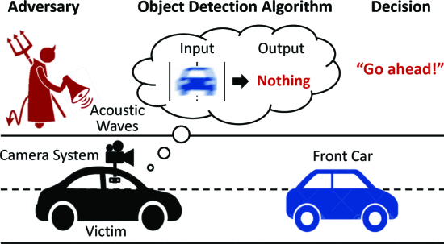
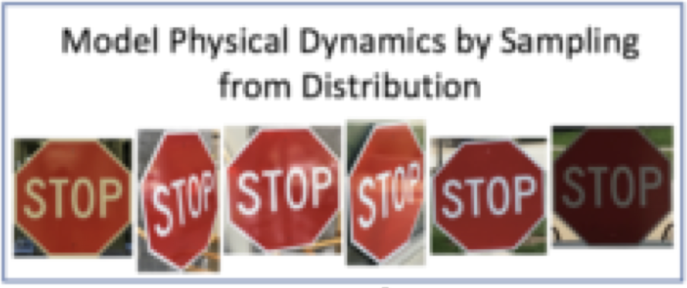
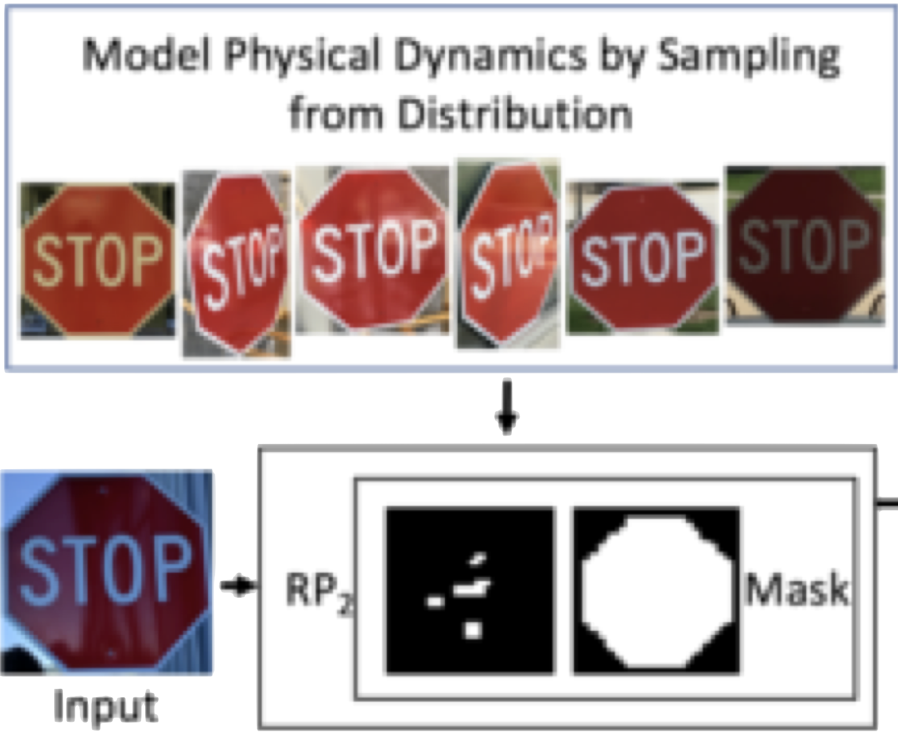
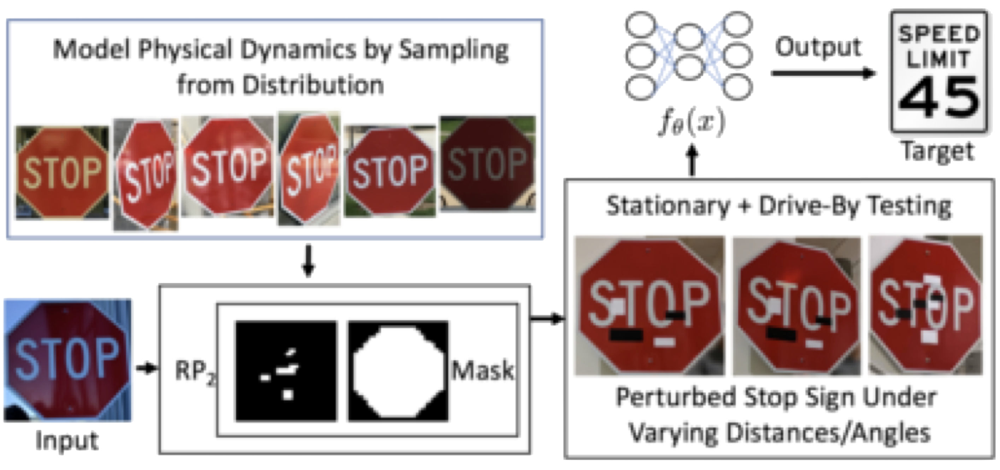
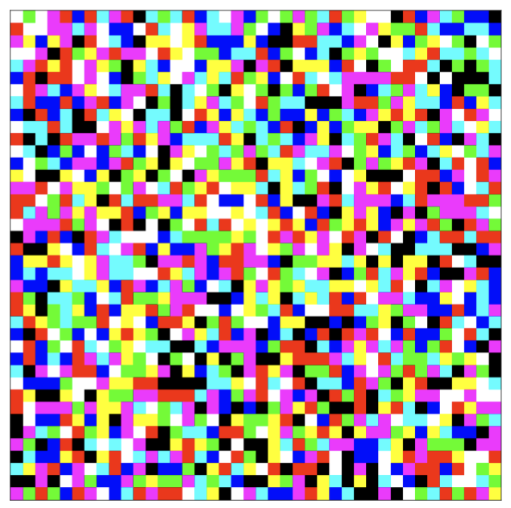

# Security ## **Design of Autonomous Systems** ### csci 6907/4907-Section 86 ### Prof. **Sibin Mohan** --- ### how do you **define** security? --- #### how do you **define** security? ||| |--------|--------| |attacks| ? | --- #### how do you **define** security? ||| |--------|--------| |attacks| ? | |defenses| ? | --- #### how do you **define** security? ||| |--------|--------| |attacks| ? | |defenses| ? | |something else| ? | || --- security for autonomous systems → significant overlap with, --- security for autonomous systems → significant overlap with, - embedded security - cyber-physical security --- security for autonomous systems → significant overlap with, - embedded security - cyber-physical security - **automotive** security --- security for autonomous systems → significant overlap with, - embedded security - cyber-physical security - **automotive** security <br> lot of work on security for such systems --- ML/AI algorithms → generates [unique attack vectors](https://spectrum.ieee.org/slight-street-sign-modifications-can-fool-machine-learning-algorithms)! Note: In this chapter we will summarize many of the topics/issues that can lead to security and privacy problems in autonomous vehicles. that it is nearly impossible to summarize all of the work on security and privacy for autonomous systems so this chapter will touch upon some of the most relevant/interesting work in the area. --- ### attacks --- ### attacks when discussing attacks in _any_ system --- ### attacks when discussing attacks in _any_ system → **[threat model](https://arxiv.org/pdf/2412.15348)** --- ### attacks when discussing attacks in _any_ system → **[threat model](https://arxiv.org/pdf/2412.15348)** 1. the **method** of entry/attack --- ### attacks when discussing attacks in _any_ system → **[threat model](https://arxiv.org/pdf/2412.15348)** 1. the **method** of entry/attack 2. the **target** of the attack --- ### attacks when discussing attacks in _any_ system → **[threat model](https://arxiv.org/pdf/2412.15348)** 1. the **method** of entry/attack 2. the **target** of the attack 3. the **capabilities** of the attacker --- ### attacks when discussing attacks in _any_ system → **[threat model](https://arxiv.org/pdf/2412.15348)** 1. the **method** of entry/attack 2. the **target** of the attack 3. the **capabilities** of the attacker - _e.g.,_ how much computing power do they have? --- ### attacks |passive|active| |--------|--------| --- ### attacks |passive|active| |--------|--------| |stealing data| | || --- ### attacks |passive|active| |--------|--------| |stealing data| causing physical harm| || --- ### attacks |passive|active| |--------|--------| |stealing data| <font style="background-color:orange">causing physical harm</font>| || Note: -In autonomous/cyber-physical systems, we are more concerned with the second category, _i.e.,_ active, since we care for the integrity of the system and **safety** -- of the users, the systems and the environment. Note that stealing data (proprietary information like system designs, software, user information, _etc._ ) is important but there is a large body of work on how to deal with such issues. We will focus more on the **active** attacks. --- many [**taxonomies**](https://dl.acm.org/doi/pdf/10.1145/3337791) of attacks exist --- many **taxonomies** of attacks exist 1. **sensor**-based attacks --- many **taxonomies** of attacks exist 1. **sensor**-based attacks 2. **actuation**-based attacks --- many **taxonomies** of attacks exist 1. **sensor**-based attacks 2. **actuation**-based attacks 3. compute **software/hardware** attacks --- many **taxonomies** of attacks exist 1. **sensor**-based attacks 2. **actuation**-based attacks 3. compute **software/hardware** attacks 4. **miscellaneous/communication** attacks --- ### **sensor**-based attacks --- corrupting **inputs** to autonomous systems --- corrupting **inputs** to autonomous systems **prevent system from working correctly** --- - [sensors](#sensors-and-sensing) → "eyes and ears" for autonomous systems --- - [sensors](#sensors-and-sensing) → "eyes and ears" for autonomous systems - sensor data corrupted/jammed → system **cannot operate correctly** --- large body of work on [physical attacks on sensor](https://ieeexplore.ieee.org/document/9152711) --- large body of work on [physical attacks on sensor](https://ieeexplore.ieee.org/document/9152711) - jamming signals --- large body of work on [physical attacks on sensor](https://ieeexplore.ieee.org/document/9152711) - jamming signals - tampering with physical circuitry --- ### [Poltergeist](https://ieeexplore.ieee.org/abstract/document/9519394?casa_token=q0hmx8m-n2wAAAAA:WuBNY-P49Hx4Uibam2a_iaY0SG_j0yE6MPuJoplLwwKzT_KRH3l24sVNmeF921OwahC2u50U5A) --- ### Poltergeist - targets cameras of autonomous vehicles --- ### Poltergeist - targets cameras of autonomous vehicles - using **acoustic manipulation** --- ### Poltergeist - targets cameras of autonomous vehicles - using **acoustic manipulation** - **control output** of camera to become blurred --- ### Poltergeist - targets cameras of autonomous vehicles - using **acoustic manipulation** - **control output** of camera to become blurred - results in **misclassifications** --- <!-- .slide: data-background="white" --> ### Poltergeist <br>  --- <!-- .slide: data-background="white" --> ### Poltergeist <br> <br> <br> **fails to recognize the car** in front! --- ### ML-based sensor attacks --- ### ML-based sensor attacks targets sensor **without physical methods** --- ### ML-based sensor attacks targets sensor **without physical methods** targeting **ML/vision algorithms** --- targeting **ML/vision algorithms** - feeding incorrect data --- targeting **ML/vision algorithms** - feeding incorrect data - using ML **subtly** change sensors value --- ### example **1** --- consider a stop sign: --- consider a stop sign: <br> <div class="multicolumn"> <div> </div> <div> <br> <br> <br> - [place small stickers/splotches](https://arxiv.org/pdf/1707.08945) </div> </div> --- consider a stop sign: <br> <div class="multicolumn"> <div> </div> <div> <br> <br> <br> - [place small stickers/splotches](https://arxiv.org/pdf/1707.08945) - vision algorithms **misclassifies** </div> </div> --- consider a stop sign: <br> <div class="multicolumn"> <div> </div> <div> <br> <br> <br> - [place small stickers/splotches](https://arxiv.org/pdf/1707.08945) - vision algorithms **misclassifies** - _e.g.,_ speed limit sign! </div> </div> --- <!-- .slide: data-background="white" --> the [attack](https://arxiv.org/pdf/1707.08945) process:  --- <!-- .slide: data-background="white" --> the [attack](https://arxiv.org/pdf/1707.08945) process:  --- <!-- .slide: data-background="white" --> the [attack](https://arxiv.org/pdf/1707.08945) process:  --- <!-- .slide: data-background="white" --> the [attack](https://arxiv.org/pdf/1707.08945) process: <br> interpreted as a **speed limit sign**! --- ### example **2** --- target [_specific_ software components](https://arxiv.org/pdf/1806.02299) → YOLO, R-CNN --- - **small perturbations are added** → input images --- - **small perturbations are added** → input images - ML algorithms → either misclassify or completely fail --- <!-- .slide: data-background="white" --> <div class="multicolumn"> <div> <br> <br> <br> - **small perturbations are added** </div> <div>  </div> </div> --- for YOLO --- for YOLO <br> ||| |---|---| | **without** adversarial patch || | || --- for YOLO <br> ||| |---|---| | **without** adversarial patch || | || object detected with bounding box --- for YOLO <br> ||| |---|---| | **without** adversarial patch | **with** adversarial patch | | | | --- for YOLO <br> ||| |---|---| | **without** adversarial patch | **with** adversarial patch | | | | **neither** object **nor** bounding box! --- <div class="multicolumn"> <div> </div> <div> <br> <br> size of patch is **relatively small**! </div> </div> --- ### [Requiem](https://sibin.github.io/papers/2024_ArXiv_Requiem_KyoKim.pdf) --- ### Requiem - **injects small changes** to sensor data --- ### Requiem - **injects small changes** to sensor data - leads autonomous vehicle **astray** --- --- ### **actuation** attacks - prevent actuation commands from executing<!-- .element: class="fragment" data-fragment-index="1" --> - change commands "in flight"<!-- .element: class="fragment" data-fragment-index="2" --> --- ### denial of service - cause wear and tear of devices <!-- .element: class="fragment" data-fragment-index="1" --> - e.g., engine or brakes <!-- .element: class="fragment" data-fragment-index="2" --> - e.g., stuxnet<!-- .element: class="fragment" data-fragment-index="2" --> --- ### attacks |software|hardware| |--------|--------| --- ### attacks |software|hardware| |--------|--------| |operating system|| --- ### attacks |software|hardware| |--------|--------| |operating system|| |entire software stack|| || --- ### attacks |software|hardware| |--------|--------| |operating system|| |entire software stack <br> e.g., kalman filter, planning algorithms, vision algorithms, sensor fusion|| || --- ### attacks |software|hardware| |--------|--------| |operating system| microprocessors | |entire software stack <br> e.g., kalman filter, planning algorithms, vision algorithms, sensor fusion|| || --- ### attacks |software|hardware| |--------|--------| |operating system| microprocessors | |entire software stack <br> e.g., kalman filter, planning algorithms, vision algorithms, sensor fusion|hidden backdoors in chips/hardware units| || --- ### entry methods --- ### entry methods - **malware injection** → especially for software - e.g. os, software stack, actuation subsystem<!-- .element: class="fragment" data-fragment-index="1" --> --- ### miscellaneous attacks - attacks by other vehicles/v2x system hacks<!-- .element: class="fragment" data-fragment-index="1" --> - data attacks<!-- .element: class="fragment" data-fragment-index="2" --> - tamper with maps/other data<!-- .element: class="fragment" data-fragment-index="3" --> --- ### defenses --- ### defenses |passive|| |--------|--------| |only detect/raise alarms|| || --- ### defenses |passive|active| |--------|--------| |only *detect*/raise alarms| *take action* on detection | || --- ### defenses |passive|active| |--------|--------| |only detect/raise alarms| take action on detection | |*e.g.*, intrusion detection| *e.g.*, eject attacker| || --- ### defensive actions --- ### defensive actions |reactive|proactive| |--------|--------| --- ### defensive actions |reactive|proactive| |--------|--------| |take action *on* detection| action *without* detection | --- ### defensive actions |reactive|proactive| |--------|--------| |take action *on* detection| action *without* detection | |*e.g.*, eject attacker/sanitize system| *e.g.*, restart-based methods | || --- ### *some* defensive possibilities --- ### *some*+ defensive possibilities \[+hard to be exhaustive as threat landscapes evolve\] --- #### **fewer communication endpoints** lots of reasons for network connectivity:<!-- .element: class="fragment" data-fragment-index="1" --> - other vehicles/traffic signs/infrastructure [v2x]<!-- .element: class="fragment" data-fragment-index="2" --> - network updates (os/software stack/security)<!-- .element: class="fragment" data-fragment-index="3" --> - entertainment systems<!-- .element: class="fragment" data-fragment-index="4" --> --- #### **encryption/authentication** - public key infrastructure (pki)<!-- .element: class="fragment" data-fragment-index="1" --> - computational and memory overheads <!-- .element: class="fragment" data-fragment-index="2" --> - power consumption <!-- .element: class="fragment" data-fragment-index="3" --> --- **embedded** chips may not be able to handle it! --- #### **behavior-based** - look at history of behavior<!-- .element: class="fragment" data-fragment-index="1" --> - software/hardware-level <!-- .element: class="fragment" data-fragment-index="2" --> - vehicular level (v2x) <!-- .element: class="fragment" data-fragment-index="3" --> - use existing/additional functions/sensors <!-- .element: class="fragment" data-fragment-index="4" --> - to detect anomalous behavior<!-- .element: class="fragment" data-fragment-index="4" --> --- #### **redundancy** to improve security - additional sensors (e.g., sensor fusion) <!-- .element: class="fragment" data-fragment-index="1" --> - additional hardware <!-- .element: class="fragment" data-fragment-index="2" --> - (e.g., ROMs, chips, trusted hardware) <!-- .element: class="fragment" data-fragment-index="2" --> - hardware signatures <!-- .element: class="fragment" data-fragment-index="3" --> - humans! <!-- .element: class="fragment" data-fragment-index="4" --> --- #### **software security practices** - isolation (VMs, containers, etc.)<!-- .element: class="fragment" data-fragment-index="1" --> - security through obscurity <!-- .element: class="fragment" data-fragment-index="2" --> --- #### **holistic/high-level methods** - security as a first principle <!-- .element: class="fragment" data-fragment-index="1" --> - better systems/product design <!-- .element: class="fragment" data-fragment-index="2" --> --- how to design **warnings** that will be noticed?